السلسلة 68
السيارة (صنف B) · 40 سؤال. كل سؤال فيه الصورة والصوت. اختار الجواب (ولا جوج إلا كانو صحاح)، ورك على «تأكيد» باش تشوف واش صبتي.
- 40سؤال
- 32باش تنجح
- 1 – 4جواب واحد ولا أكثر
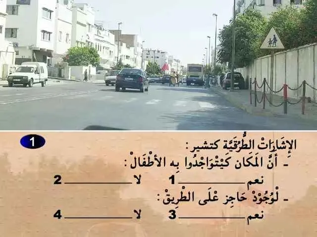
الكلافيي: 1–4 للجواب، Enter للتأكيد وللسؤال الجاي.
السلسلة 68 · النتيجة ديالك
0 / 40
السلسلة 68
السيارة (صنف B) · 40 سؤال، بالصوت، مع الجواب الصحيح والشرح.
السؤال 1
بيّن الجواب
الجواب الصحيح: 1 و 4
العلامة الطّرقية على اليمين كتعني الخطر حيت كاينة مدرسة على بعد 50 متر، يعني احتمال كبير يكونو الأطفال. هاد العلامة ما كتعنيش وجود الحاجز.
السؤال 2
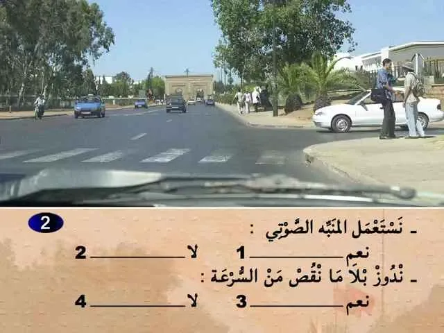
بيّن الجواب
الجواب الصحيح: 2 و 4
فوسط المدينة ما كنستعملوش المنبّه الصوتي إلاّ في الضرورة القصوى، ودابا ما كاين حتى خطر. بالنسبة للمرور، حنا فملتقى الطّرق، ودائما فملتقيات الطرق خاصنا نخففو السّرعة.
السؤال 3
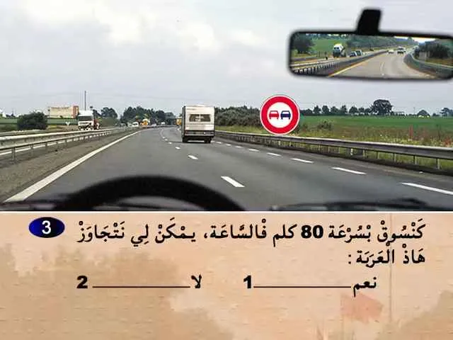
بيّن الجواب
الجواب الصحيح: 2
حنا دابا فطريق سيّار (نعرفوه بالخط المتّصل على اقصى اليسار) والسرعة القصوى محدّدة فـ 120 كلم/ساعة، الخط المتقّطع كيسمح لينا بالتّجاوز، ولكن كاينة علامة طرقية كتمنعنا من التجاوز، يعني ما نقدرش نتجاوز.
السؤال 4
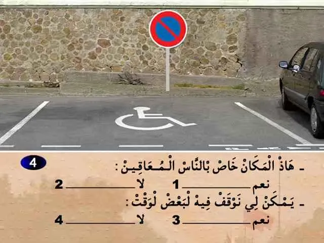
بيّن الجواب
الجواب الصحيح: 1 و 4
هاد البلاصة مخصصة لذوي الاحتياجات الخاصة، وما يمكنش نوقفو ولا نتوقّفو فيها.
السؤال 5
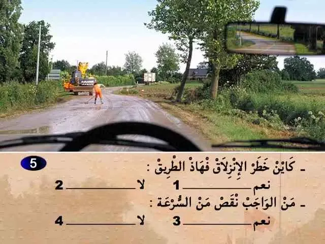
بيّن الجواب
الجواب الصحيح: 1 و 3
الطريق مبللة بالماء، يعني كاين خطر الانزلاق. خاصني نخفف السّرعة حيت كاينة الأشغال وباش نقلل من خطر الانزلاق، حيت السرعة كتكون عامل رئيسي فالانزلاق.
السؤال 6
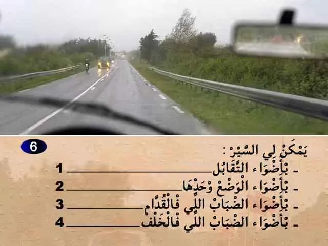
بيّن الجواب
الجواب الصحيح: 1 و 3
كاين المطر، خاصنا نسوقو بأضواء التّقابل وأضواء الضباب الأمامية.
السؤال 7
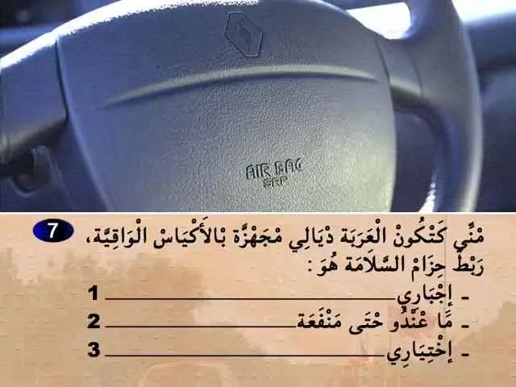
بيّن الجواب
الجواب الصحيح: 1
الكيس الواقي في السيارة ما كيعوضش حزام السلامة، هو فقط كيخفف من حدة الإصطام، ربط حزام السّلامة كيبقى ديما إجباري.
السؤال 8
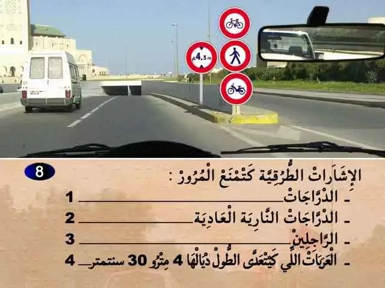
بيّن الجواب
الجواب الصحيح: 1 و 2 و 3
الإشارات الطّرقية كتدل على المنع، والمنع كيتطبق من عند العلامة. كتمنع مرور الدراجات والدراجات النارية والراجلين. العلامة اللي فيها 4 أمتار و30 سنتمتر كتعني ممنوع على العربات اللي علوها كيتجاوز 4 أمتار و30 تدوز من هاد الطريق.
السؤال 9
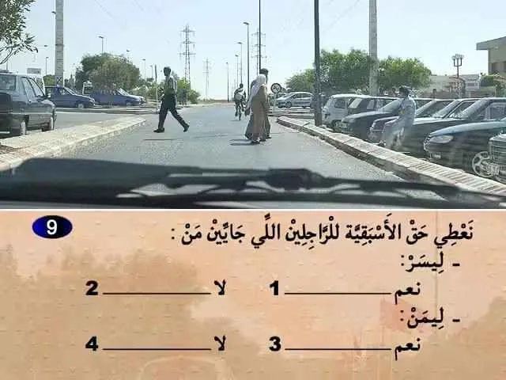
بيّن الجواب
الجواب الصحيح: 1 و 3
ملي ما كيكونش شرطي ينظّم حركة المرور ولا إشارات ضوئية، خاصنا دائما نردو البال و نعطيو الأسبقية للراجلين سواء جايين من اليمين ولا اليسار.
السؤال 10
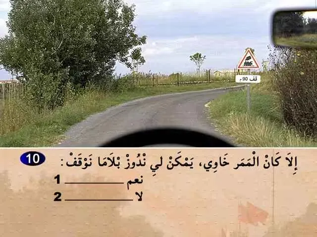
بيّن الجواب
الجواب الصحيح: 2
كاينة علامة طرقية كتعلمني بلي بعد 90 متر خاصني نوقف. حتى إلى ما كانوش سيارات والطريق خاوية، خاصني نحترم "قف" و نوقف.
السؤال 11
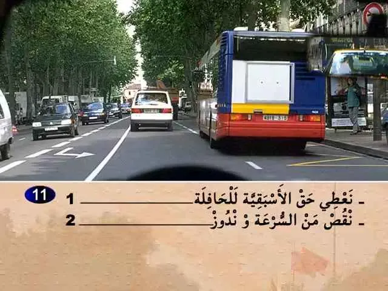
بيّن الجواب
الجواب الصحيح: 1
بالنسبة للحافلة اللي كتحاول تندمج فحركة السّير، وكيما كيبان فإن الطريق مزدحمة، ما فيها باس نعطيها الأسبقية باش تندامج.
السؤال 12
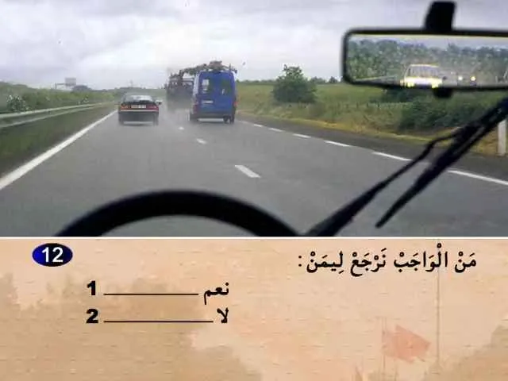
بيّن الجواب
الجواب الصحيح: 2
حنا فطريق سيّار، والطريق ذات اتجاه واحد. ما كاينش علامات كتجبرني ننحاز لليمين. و فالطريق السيار يمكن ليا نتجاوز العربات حتى إلى كانت شي سيارة أخرى كدير التجاوز فنفس الوقت.
السؤال 13
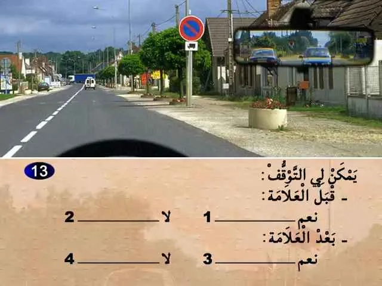
بيّن الجواب
الجواب الصحيح: 1 و 3
ممنوع على الشاحنات التوقّف قبل العلامة أو بعدها، أما السيارات يمكن ليهم.
السؤال 14
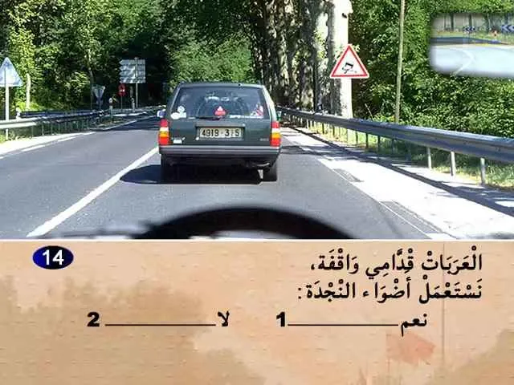
بيّن الجواب
الجواب الصحيح: 1
إذا كانت العربات قدامي واقفة وما كايناش سيارات من ورايا، نستعمل أضواء النجدة. إذا كنت في الوسط أو كاين سيارات من ورايا، ما نستعملهمش.
السؤال 15
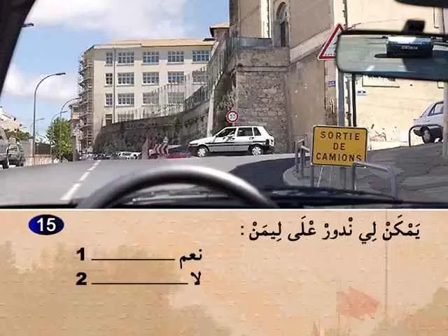
بيّن الجواب
الجواب الصحيح: 1
ما كاينش خط متّصل على اليمين، وما كايناش علامة كتمنعني من الانعطاف لليمين، يعني يمكنني الانعطاف لليمين.
السؤال 16
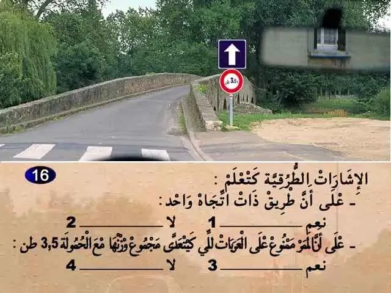
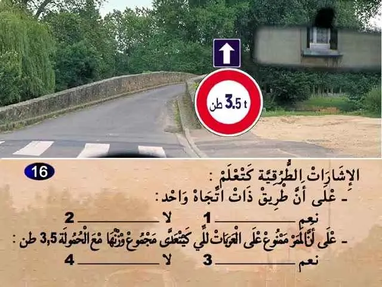
بيّن الجواب
الجواب الصحيح: 1 و 3
الإشارة الطّرقية الأولى كتدل على الطريق ذات اتجاه واحد، والثانية كتدل على أن العربات اللي وزنها مع الحمولة كيتجاوز 3.5 طن ممنوعة من المرور.
السؤال 17
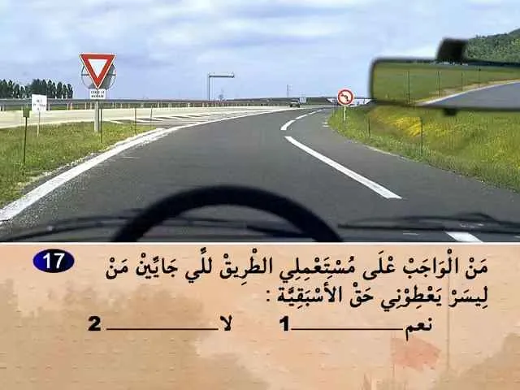
بيّن الجواب
الجواب الصحيح: 2
حنا دابا في مسلك الاندماج فالطريق السيار، خاصنا نعطيو الأسبقية للعربات اللي جاية من اليسار.
السؤال 18
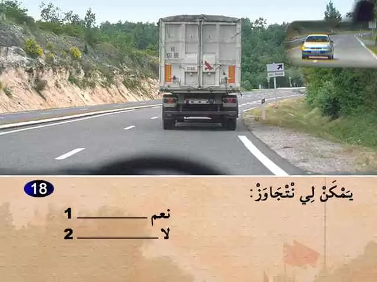
بيّن الجواب
الجواب الصحيح: 2
الخط المتقطّع كيسمح لي بالتجاوز، ولكن ما يمكننيش نتجاوز حيت كاينة سيارة من الخلف كتستعد للتجاوز.
السؤال 19
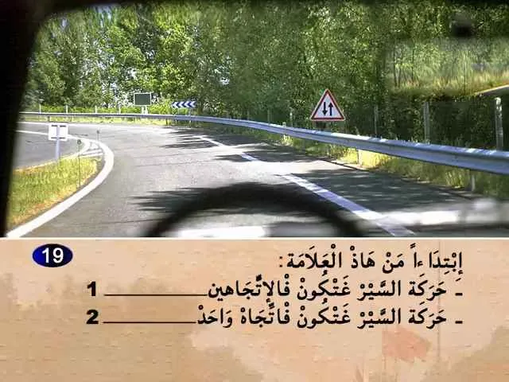
بيّن الجواب
الجواب الصحيح: 1
الإشارة الطّرقية كتدل بلي ابتداء منها، حركة السّير غادي تكون في الاتجاهين.
السؤال 20
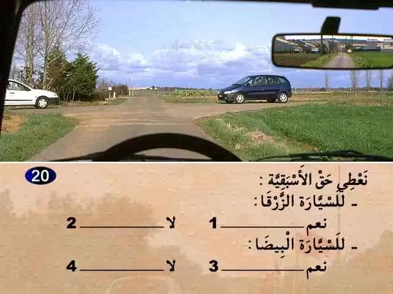
بيّن الجواب
الجواب الصحيح: 1 و 4
فملتقى الطّرق، إذا ما كايناش إشارات ضوئية ولا علامات طرقية ولا شرطي مرور، الأسبقية دائما للعربات اللي جاية من اليمين، يعني نعطي الأسبقية للسيارة الزرقاء.
السؤال 21
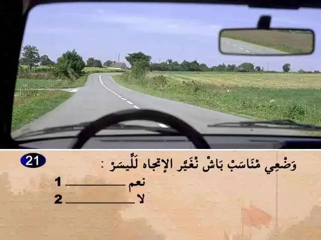
بيّن الجواب
الجواب الصحيح: 2
ملي نبغي نبدل الاتجاه لليسار، خاصني نكون في المسلك اليمين باش نقدر ننعطف بسهولة ونعطي الطريق للعربات الجاية من الاتجاه المعاكس.
السؤال 22
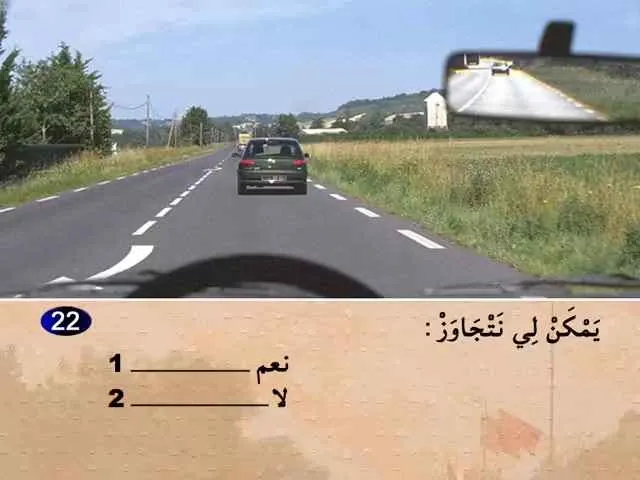
بيّن الجواب
الجواب الصحيح: 1
الخط المتقطّع كيسمح لي بالتجاوز، والأسهم ديال الانحياز كتخص العربات الجاية من الاتجاه المعاكس.
السؤال 23
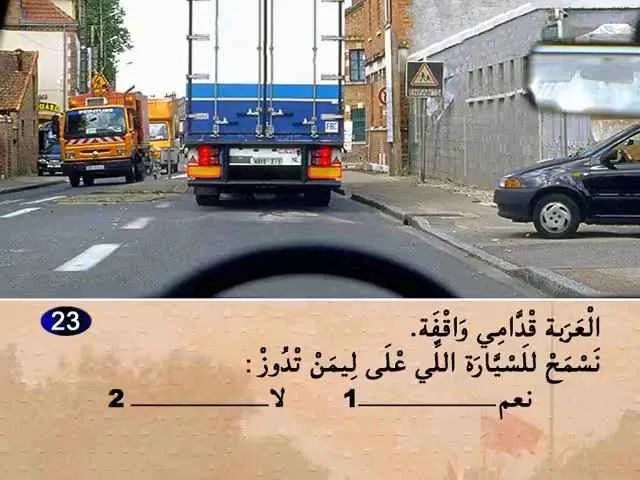
بيّن الجواب
الجواب الصحيح: 1
ملي تكون حركة المرور متوقفة والعربة اللي قدامي متوقفة، نسمح للسيارة اللي على اليمين بالمرور باش نسهل حركة السير.
السؤال 24
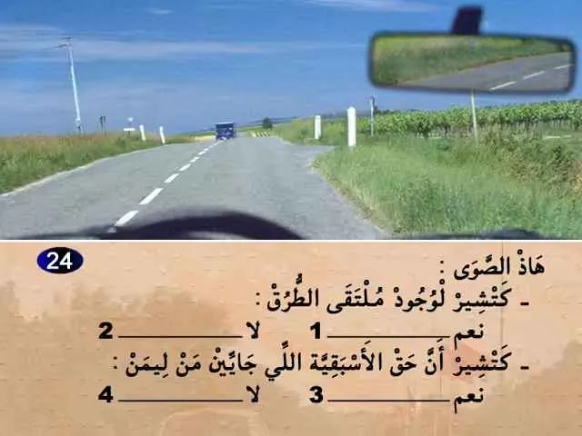
بيّن الجواب
الجواب الصحيح: 1 و 4
الصوى كتدل على وجود ملتقى الطرق، ولكن ما كتقولش لينا اشنو القاعدة لي نطبقوعند ملتقى الطّرق.
السؤال 25
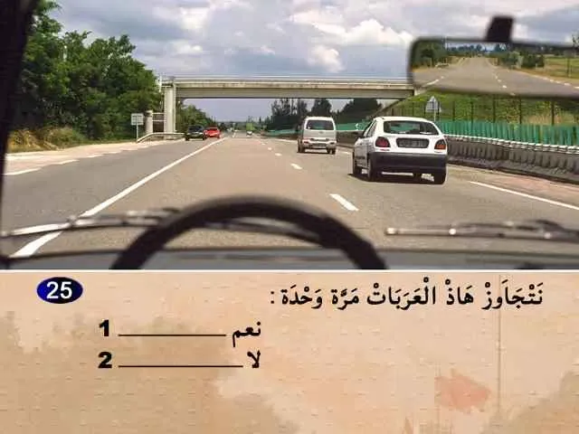
بيّن الجواب
الجواب الصحيح: 1
ملي تكون طريق ذات اتجاه واحد وعلامة الخط المتّصل على اليسار، فهي غالبا طريق سيار، يعني يمكنني نتجاوز أكثر من عربة مرّة وحدة.
السؤال 26
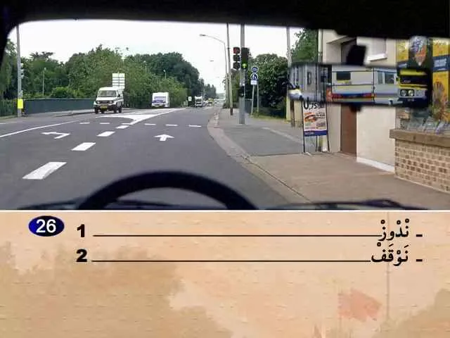
بيّن الجواب
الجواب الصحيح: 1
الإشارة الضوئية كتدل على أنني نقدر نكمل السّير للقدام.
السؤال 27
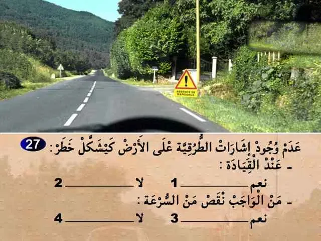
بيّن الجواب
الجواب الصحيح: 1 و 3
ملي ما تكونش إشارات طرقية على الأرض، كيزيد خطر وقوع الحوادث، خاصني نرد البال ونخفف السرعة.
السؤال 28
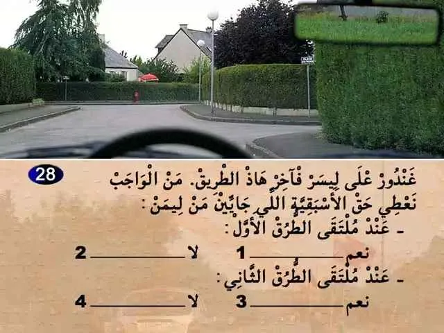
بيّن الجواب
الجواب الصحيح: 1 و 3
فملتقى الطّرق، إذا ما كايناش إشارات ضوئية ولا علامات طرقية ولا شرطي مرور، الأسبقية دائما للعربات اللي جاية من اليمين، خاصني نعطي الأسبقية في الملتقى الأول والثاني.
السؤال 29
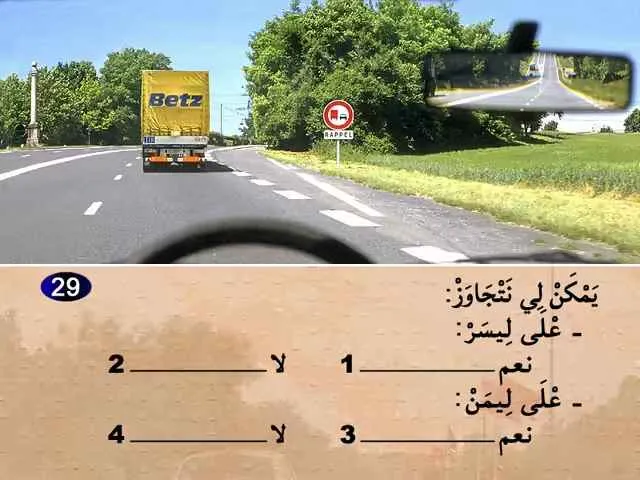
بيّن الجواب
الجواب الصحيح: 1 و 4
الإشارة الطّرقية كتمنع الشاحنات من التجاوز، ولكن السيارات يمكنهم يتجاوزوا حيت الخط المتقطّع كيسمح بالتجاوز من الجهة اليسرى، التجاوز من الجهة اليمنى ممنوع إلا إذا كانت العربة غادي تنعطف لليسار.
السؤال 30
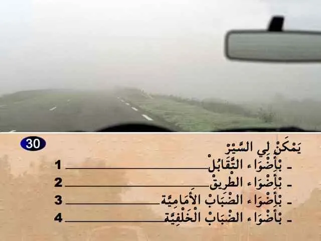
بيّن الجواب
الجواب الصحيح: 1 و 3 و 4
ملي يكون الضباب، نسوق بأضواء التّقابل وأضواء الضباب الأمامية والخلفية.
السؤال 31
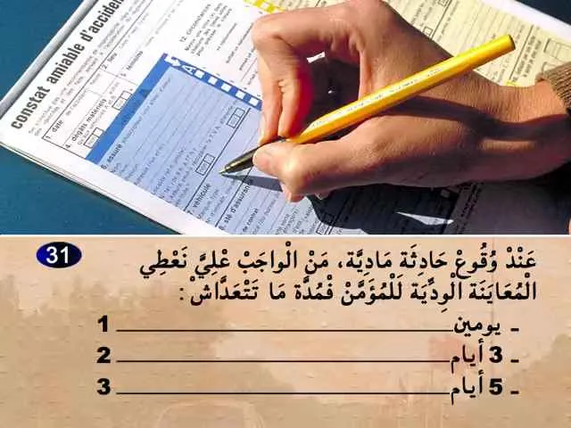
بيّن الجواب
الجواب الصحيح: 3
خاصني نعطي المعاينة الودّية لشركة التأمين فمدة لا تتجاوز 5 أيام.
السؤال 32
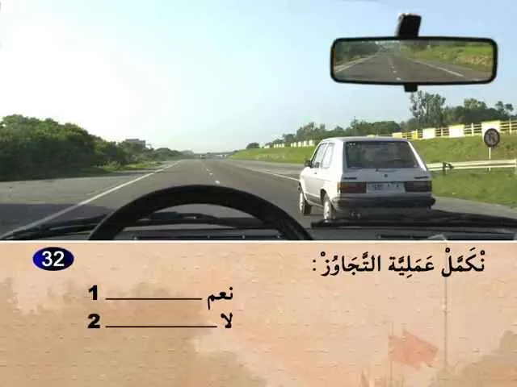
بيّن الجواب
الجواب الصحيح: 1
حنا فطريق ذات اتجاه واحد و الخط متقطّع، وتعني يمكني نكمل عملية التجاوز.
السؤال 33
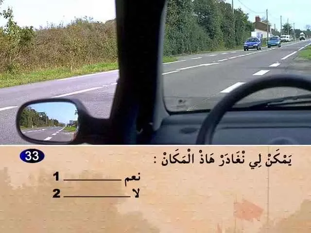
بيّن الجواب
الجواب الصحيح: 2
ما كايناش سيارات جاية من الخلف، ولكن كاينة سيارة في الاتجاه المعاكس كتستعد للتجاوز، خاصني ننتظر.
السؤال 34
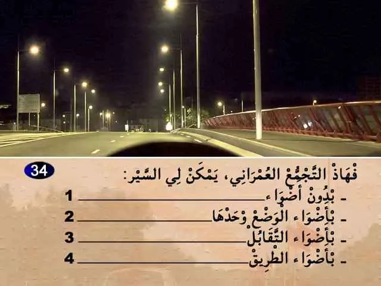
بيّن الجواب
الجواب الصحيح: 2 و 3
في التجمعات السكانية، يمكنني نسوق بأضواء الوضع فقط إذا كانت إنارة الشارع مزيانة، ويمكنني أيضا نسوق بأضواء التّقابل.
السؤال 35
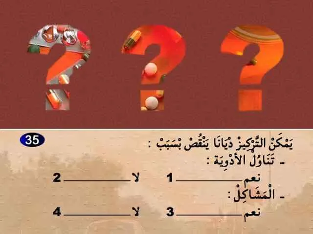
بيّن الجواب
الجواب الصحيح: 1 و 3
نقصان التركيز يمكن يكون سببه تناول الأدوية اللي كتجيب النعاس والتّعب، أو المشاكل اللي تلهينا عن الانتباه أثناء السياقة.
السؤال 36
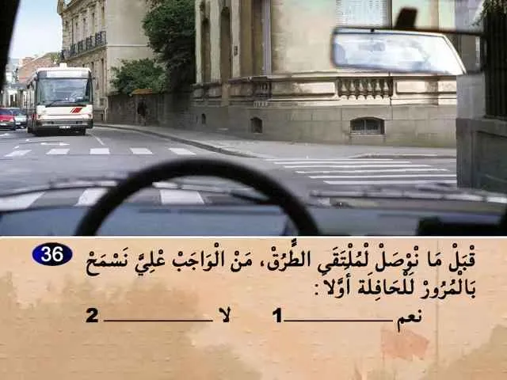
بيّن الجواب
الجواب الصحيح: 2
فملتقى الطّرق، الأسبقية دائما لليمين الا إذا كانت إشارات طرقية كتقول العكس، يعني الحافلة اللي باغة تنعطف لليسار خاصها تعطيني الأسبقية.
السؤال 37
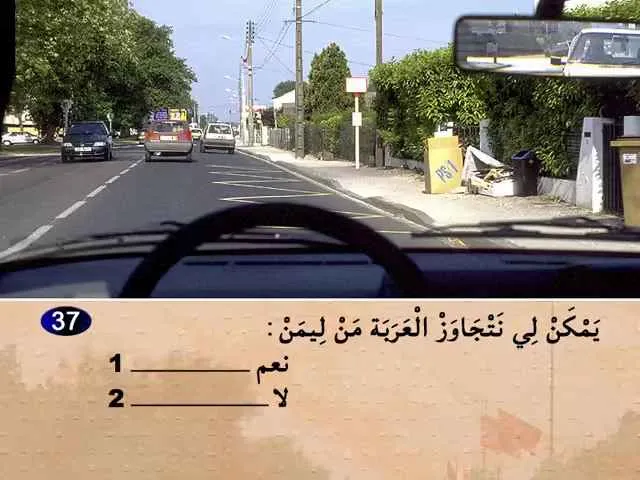
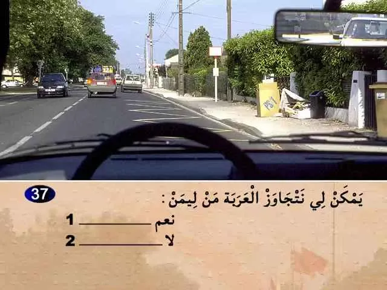
بيّن الجواب
الجواب الصحيح: 1
الحالة الوحيدة اللي يمكنني نتجاوز من الجهة اليمنى هي ملي العربة كتكون غادي تدور على الليسر، يمكنني نتجاوزها من الجهة اليمنى بشرط مانتوقفش في مكان الحافلات.
السؤال 38
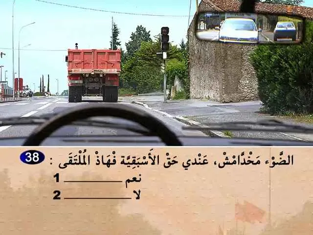
بيّن الجواب
الجواب الصحيح: 2
فملتقى الطّرق، ملي ما تكونش الإشارات الضّوئية شغالة، الأسبقية للعربات الجاية من اليمين.
السؤال 39
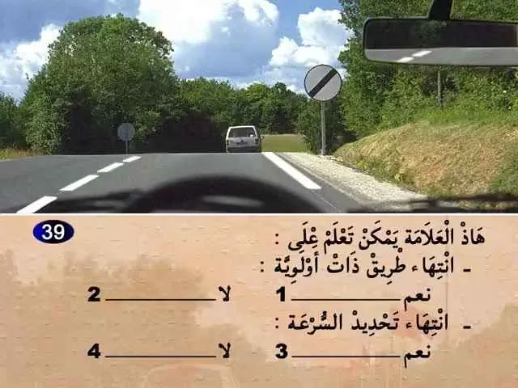
بيّن الجواب
الجواب الصحيح: 2 و 3
الإشارة الطّرقية كتدل على انتهاء تحديد السّرعة، ماشي انتهاء طريق ذات أولوية.
السؤال 40
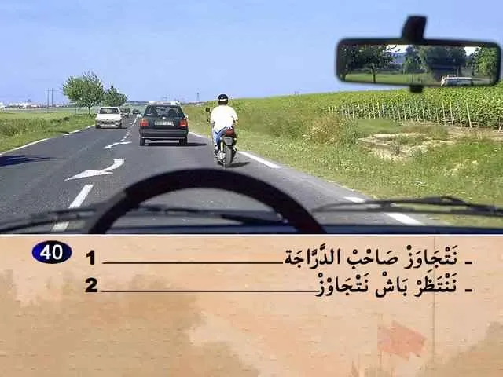
بيّن الجواب
الجواب الصحيح: 2
كاينة سيارات جاية من الاتجاه المعاكس، ما يمكننيش نتجاوز دابا، خاصني ننتظر.